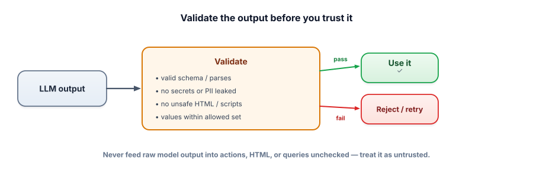

Output validation
The model’s output is not trusted code — it’s text generated from (possibly poisoned) inputs. The moment you feed it into HTML, a database query, a shell, or an action, it becomes an attack vector. Validating output before use closes the loop on LLM security.
Why output is an attack surface
We treat input as untrusted (Lesson 7.1). The subtle danger is that output is untrusted too: it’s shaped by inputs an attacker may control (via injection), and the model can produce malformed, malicious, or sensitive content. If you render its output as HTML, you risk XSS; if you run its output as a SQL query, you risk SQL injection; if you let it trigger a tool, you risk an unintended action; if you pass it on verbatim, you might leak a secret it included. The fix is the same as for any untrusted data: validate and sanitize before use.

Output validation is checking and sanitizing the model’s output before your system acts on it. It includes schema validation (does it parse into the expected shape? — Track 2.4), sanitization (escape or strip unsafe HTML/markup so it can’t execute), allowlisting (only permit known-good values/actions), and leak checks (no secrets or PII in what you return). The principle: insecure output handling — trusting model output downstream — is a top LLM vulnerability.
Output validation is like a bank teller checking a cheque before paying it. The cheque looks fine, but the teller still checks the amount is in numbers and words, the signature matches, and the sum is under the account limit. The person who wrote it might have been fooled or forced. Where it breaks: a cheque has a fixed format, but model output is free text that can hide instructions in links, markdown or code, so you have to check every place the text is going to be used.
The pattern: parse, check, allowlist, sanitize — then and only then use it.
import json, html
def safe_use(model_output):
# 1) structure: must be valid JSON in the expected shape (Track 2.4)
try:
data = json.loads(model_output)
except json.JSONDecodeError:
return reject("not valid JSON")
# 2) allowlist: action must be one we permit (never run arbitrary actions)
if data.get("action") not in {"refund", "reply", "escalate"}:
return reject("unknown action")
# 3) bounds: enforce hard limits in CODE, not the prompt (Track 4.8)
if data["action"] == "refund" and data["amount"] > 100:
return needs_human_approval(data)
# 4) sanitize anything rendered to a user (prevent XSS)
safe_text = html.escape(data["message"])
return safe_textNotice every dangerous path is gated by your code, not the model’s good intentions: unknown actions are rejected, big refunds need a human, and user-facing text is HTML-escaped so an injected <script> can’t run. The model proposes; your validation disposes.
Assumptions: a retailer's text-to-SQL assistant serves 300 analysts, about 9,000 questions a day, on a warehouse with 400 tables, of which 12 hold customer personal data.
- Parse. Parse the generated SQL with a real SQL parser, not a regex. Reject anything that does not parse.
- Statement type. Allow only a single SELECT. If 0.5% of generations contain a second statement, a write, or DDL, that is 9,000 x 0.005 = 45 blocked queries a day. Log each one.
- Table allowlist per user. Resolve every table and view the query touches and compare against what this analyst's role may read. The 12 PII tables are reachable only through masked views.
- Bounds in code. Force a LIMIT (say 10,000 rows) and a statement timeout (say 60 s), and run as a read-only service account. Even a valid but huge cross join cannot hurt the warehouse.
- Self-correction loop with a cap. If the query errors, send the error back to the model at most 2 times, then stop and show the error.
- Output rendering. The answer is shown as markdown in a web app. Escape HTML, and render images or links only from allowlisted domains, so a poisoned column value that says "add this image link" cannot exfiltrate results. This is improper output handling, LLM05 in the OWASP 2025 list.
- Measure. Track blocked-query rate by reason (not SELECT, disallowed table, parse failure) per prompt version. A sudden jump in 'disallowed table' after a prompt change is a regression worth stopping.
- Model output is untrusted — it’s shaped by attacker-influenceable inputs and can be malformed or malicious.
- Validate before use: parse the schema, allowlist values/actions, enforce bounds in code, sanitize markup, scan for leaks.
- Insecure output handling (XSS, SQL injection, unsafe actions) is a top LLM vulnerability.
- Enforce hard limits and allowed actions in code, never via the prompt alone.
- This closes the loop: untrusted in and untrusted out.
Your app shows the model’s answer directly in a web page via innerHTML. An attacker, through prompt injection, gets the model to output <script>steal()</script>. What protects you?
Why validate the model's output against a schema before acting on it?
Your chat UI renders model output as markdown. Which output rule best blocks data exfiltration through injected content?
The model returns a tool call: transfer_funds(amount=50000, to='ACC-991'). Your validator checks the JSON schema and it passes. What is still missing?
1. Give three distinct downstream sinks where unvalidated model output is dangerous, and the matching validation.
2. Why enforce a refund limit in code rather than instructing the model “never refund over $100”?
3. Your agent asks the model which tool to call. Why allowlist the action instead of executing whatever it names?
▸ Show solutions & reasoning
1. (a) HTML/DOM → escape/sanitize to prevent XSS. (b) SQL/database → never build queries from raw output; use parameterized queries and validate values to prevent SQL injection. (c) Actions/tools → allowlist permitted actions and validate arguments to prevent unintended operations. (Also: returning text to a user → scan for secrets/PII.) Each sink has a matching, well-known sanitization.
2. Because the prompt is influenceable (injection) and probabilistic — “never over $100” can be overridden or ignored, and you’d only find out when money moved. A hard check in code runs outside the model’s influence and cannot be talked around: even if the model outputs amount: 10000, your validator rejects or escalates it. Security limits belong in the trusted layer.
3. Because the model could be hijacked (injection) or simply hallucinate a tool name, and executing an arbitrary named action is “excessive agency” — a top LLM risk. An allowlist means only the specific, vetted actions can run, so the worst a manipulated model can do is request something that gets rejected. You constrain the set of possible actions in code, not trust the model to choose safely.
Output validation is where LLM security rejoins ordinary, battle-tested application security. The lesson the web learned decades ago — “never trust input; sanitize before it crosses into a dangerous context” — applies twice for LLM apps: untrusted input flows into the model, and the model’s (input-influenced) output flows into your sinks. So you sanitize at both boundaries with the same rigor: parameterized queries for databases, escaping/CSP for HTML, allowlists for actions, schema validation for structure, and secret/PII scanning for anything returned. The LLM is just a powerful, manipulable component in the middle; the deterministic code around it is what enforces safety.
This reframes the whole track’s philosophy. You don’t make the model trustworthy — you build a system where the model’s behavior, however manipulated, can only flow through validated, least-privilege channels. Improper output handling shows up explicitly in the OWASP LLM Top 10 (LLM05:2025; the 2023-24 list called it “insecure output handling”) because it’s so commonly skipped: teams validate inputs, then pipe the model’s output straight into eval, innerHTML, or a database. Don’t. Treat output as untrusted data, run it through the gauntlet of structure-check → allowlist → bounds-in-code → sanitize → leak-scan, and only then let it act. Combined with input moderation, prompt hardening, and least privilege, this is what turns “the model said so” into a system you can actually defend.
labs/09_text_to_sql_duckdb.pyFree and offline once set up: Ollama with qwen2.5:7b, plus the packages in labs/README.md. From the course folder:
python labs/09_text_to_sql_duckdb.pyWhat to look for: Find the SELECT-only validation and the row limit in the lab. Ask a question phrased to tempt a write (for example 'delete the test orders and then count orders') and confirm the validator rejects the generated SQL before DuckDB runs it. For the markdown-URL side of output validation, the 07_injection_exfiltration lab shows the allowlist step.
Small samples: these labs use 5 to 20 cases so they run in minutes on a laptop. Where they report a rate, they print n and a 95% Wilson interval. Read them as a demonstration of the mechanism, not as a measured rate for your system; for that you need hundreds of cases and several seeds.
▸ Recorded output (our run, 2026-11-03, qwen2.5:7b on a laptop GPU)
Q: What share of orders were returned? Give a fraction between 0 and 1.
SQL: SELECT SUM(CASE WHEN status = 'returned' THEN 1 ELSE 0 END) / COUNT(*) AS return_share FROM orders;
PASS fixes=0 got=[(0.09483333333333334,)] gold=[(0.09483333333333334,)]
Q: Average delivered order value for Plus members vs non-members.
SQL: SELECT AVG(CASE WHEN c.is_plus THEN o.amount_rs ELSE NULL END) AS avg_plus, AVG(CASE WHEN NOT c.is_plus THEN o.amount_rs ELSE NULL END) AS avg_non_plu
FAIL fixes=0 got=[(4945.648507917174, 5045.7609119496865)] gold=[(False, 5045.760911949686), (True, 4945.648507917174)]
Q: How many customers placed no orders at all?
SQL: SELECT COUNT(*) FROM customers WHERE customer_id NOT IN (SELECT customer_id FROM orders WHERE status = 'delivered')
PASS fixes=0 got=[(50,)] gold=[(50,)]
execution accuracy: 5/6
3) A user asks for something destructive
blocked by the gate: DELETE is not allowed (SELECT only)
Look: safety comes from the parser + read-only principal + row cap, not from asking the model nicely.
Wrong-but-valid SQL (a FAIL above) is the harder problem; only an eval set with gold answers catches it.Your numbers will differ a little run to run. Full log: labs/outputs. Source: labs/09_text_to_sql_duckdb.py.
Warm-up. Name the right sanitiser for each sink: (a) model text inserted into a web page, (b) model-chosen values in a SQL WHERE clause, (c) model-chosen shell command.
▸ Solution
(a) HTML-escape it or set it as text content, never innerHTML, plus a Content-Security-Policy. (b) Parameterised queries with the values validated against type and allowed ranges; never string-format SQL from model output. (c) Avoid it: map the model's choice to a fixed allowlist of commands with validated arguments, run in a sandbox with no network and least privilege. Free-form shell from a model is the riskiest sink.
Transfer. A model writes product descriptions that are published to your website by a nightly job. Supplier spec sheets feed the prompt. List the output checks the job needs.
▸ Solution
Escape or sanitise HTML with a strict allowlist of tags (p, ul, li, strong). Strip or allowlist links and images so supplier-planted URLs cannot appear. Check claims against the spec sheet for regulated fields (price, warranty, certifications), since a wrong warranty claim is a legal risk. Scan for PII or internal notes leaking from the spec sheet. Enforce a length range. Run a content moderation check. Anything failing goes to a review queue instead of being published, and the job reports counts per failure reason.
Stretch. Design an output validation layer for an agent with 15 tools, so adding a 16th tool is safe by default.
▸ Solution
Each tool is registered with a typed argument schema, a risk level (read, write, outbound, irreversible), and a policy function. The executor, not the model, runs: schema validation, then the policy (for example recipient must be the requesting user; amount at most 100 without approval; paths inside the workspace), then a check on data flow, so values derived from untrusted content cannot be used as outbound destinations, then approval for high-risk levels. A tool with no policy defaults to 'needs approval'. Every decision is logged with the reason. CI includes red-team cases per risk level. The safe default means a forgotten policy fails closed, not open.
Junior Why is model output untrusted?
▸ Model answer
Because it is shaped by everything in the context, including text an attacker controls through injection, and because models make mistakes. If you put output straight into a web page you risk XSS; into SQL, injection; into a tool call, unintended actions; rendered as markdown, data leaking through image URLs. OWASP calls this Improper Output Handling, LLM05 in the 2025 list. So you validate and sanitise output for its destination, exactly as you would any user input.
Mid How do you validate a model's tool calls before executing them?
▸ Model answer
Parse the call into a typed schema and reject anything malformed. Check the tool name against an allowlist for this user and session. Validate arguments against business rules in code: ranges, allowed recipients, paths, ownership of the resource. Check where argument values came from; values copied from untrusted documents should not become destinations for outbound actions. Require human approval for irreversible or high-value actions. Log every call and decision. The model proposes; the code decides.
Senior How would you stop a coding agent from being tricked by a malicious README into leaking secrets?
▸ Model answer
Assume the README will succeed in steering the model. Do not let secrets be reachable: run the agent in a sandbox without production credentials, with environment variables scrubbed. Restrict network egress to an allowlist (package registry, the company's git host), so there is nowhere to send data. Validate commands against an allowlist, and require approval for network, credential or file-outside-repo operations. Scan outputs and diffs for secret patterns before they leave the sandbox. Log every command. This turns a successful injection into a blocked request in a log.
You’ve now seen each guard individually. The art is combining them so no single failure becomes a breach. Next: defense in depth.